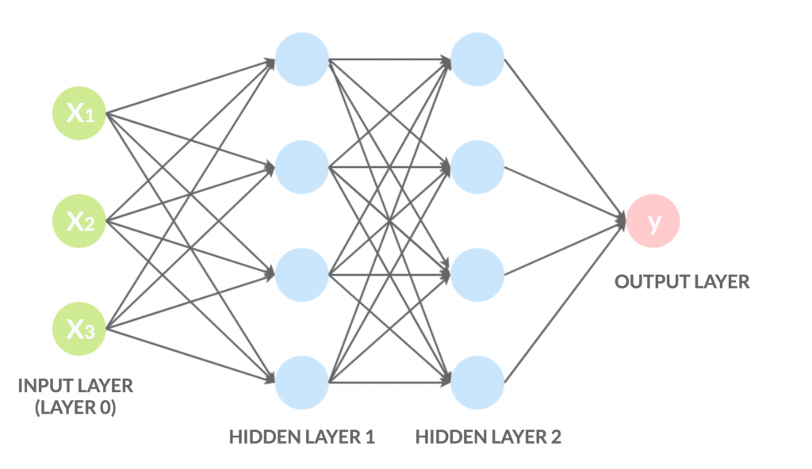
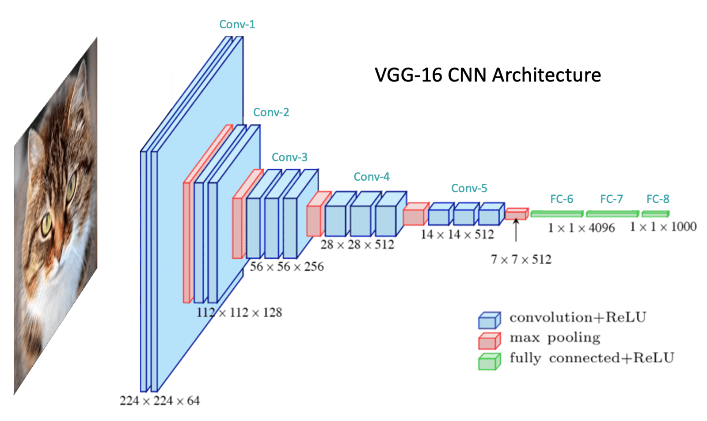

Intelligenza Artificiale
Deep Learning: Rivoluzione nell'Apprendimento Automatico
1. Fondamenti del Deep Learning
Dall'AI al Machine Learning al Deep Learning
Il deep learning rappresenta l'evoluzione più avanzata del machine learning, ispirata alla struttura del cervello umano. Mentre l'AI tradizionale richiedeva regole esplicite, il deep learning apprende direttamente dai dati attraverso:
- Reti neurali artificiali con multiple layer nascosti
- Backpropagation per l'ottimizzazione dei pesi
- Funzioni di attivazione non lineari (ReLU, Sigmoid, Tanh)
2. Addestramento delle Reti Neurali
Sfide nell'Addestramento
- Overfitting: Il modello memorizza i dati invece di generalizzare
- Vanishing Gradients: Problema nelle reti molto profonde
- Bisogno di Big Data: Milioni di esempi per prestazioni ottimali
3. Applicazioni Reali

Medicina
Diagnosi mediche da immagini radiologiche con accuratezza superiore a molti specialisti umani
Automotive
Veicoli autonomi che processano in tempo reale dati da sensori e camere
Finanza
Rilevamento frodi e trading algoritmico basato su pattern complessi
4. Etica e Sfide Future
Problemi Aperti
- Bias algoritmici: I modelli riflettono i bias presenti nei dati di training
- Explainability: Difficoltà di interpretare le decisioni delle "black box"
- Sostenibilità: Enorme consumo energetico dei modelli large-scale
Conclusioni
Il deep learning ha rivoluzionato il campo dell'intelligenza artificiale, permettendo progressi impensabili solo un decennio fa. Tuttavia, con grande potere derivano grandi responsabilità: la comunità scientifica deve affrontare non solo sfide tecniche ma anche etiche. Il futuro vedrà probabilmente un'integrazione ancora più profonda tra capacità umane e artificiali, con sistemi che combinano l'efficienza del machine learning con l'intuizione e la creatività umana.